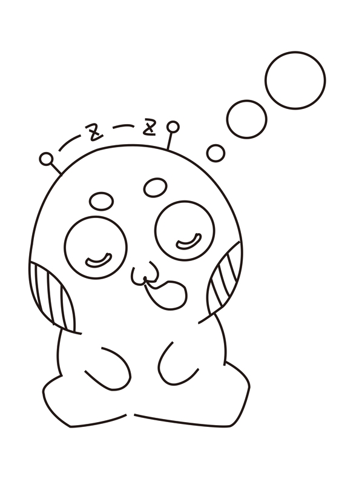
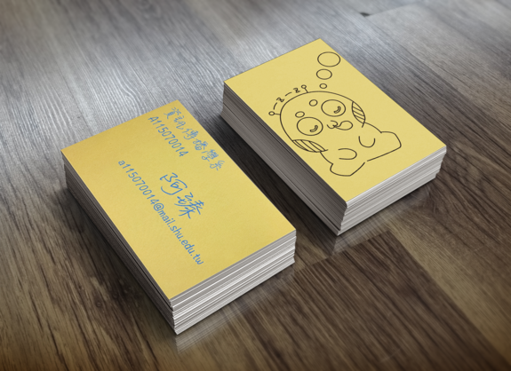

林宥臻
Lin youzhen
台北市⽂⼭區⽊柵路111號 · 0912-345-678 ·
a115070014@mail.shu.edu.tw
您好！我是林宥臻，⽬前就讀於世新⼤學資訊傳播學系。來自台南、對跳舞有興趣，熱愛動漫、電影等也喜歡玩遊戲。目前於網頁設計課程上學習有關 HTML/CSS/JavaScript 的基礎知識。
您好！我是林宥臻，⽬前就讀於世新⼤學資訊傳播學系。來自台南、對跳舞有興趣，熱愛動漫、電影等也喜歡玩遊戲。目前於網頁設計課程上學習有關 HTML/CSS/JavaScript 的基礎知識。
養具備數位內容整合、數位通路與AI應用能力的專業人才。 課程強調資訊蒐集、管理與加值，結合網站規劃、社群行銷與人工智慧生成內容（AIGC），回應數位時代需求。 為呼應國家科技產業發展趨勢，資訊傳播學系規劃「AI課程一條龍」，從大一至大四逐步引導學生學習AI藝術創作、生成式內容核實、大型語言模型應用等課程，銜接產業趨勢，提升就業競爭力。.
我在高中畢業後於６月入職王品集團的陶板屋工作，工作性質是負責外場服務的服務生。暑假期間每天上班，一個禮拜休息兩天。一開始學習如何送餐、介紹餐點，後面慢慢被教導其他的工作。例如:如何製作沙瓦、點餐之類，要學到這東西之前 只能一直不斷地為客人送上餐點。等到被認可之後才會慢慢被教導如何為客人服務點餐的部分，後來開學調到北部分店因無法適應南北差異於10月離職。
我在11月的時侯，成功面試入取綱要在遠東大巨蛋的分店。我會選擇做這份工作是因為它的時薪真的很高，比我上份工作多很多加上可以補足我所需的生活費因此我很樂意做這份工作。
我喜歡跳舞、玩電腦遊戲、看看日本動漫和感興趣的電影、影集。因為上大學以前就一直想跳舞加上表演，所以在上了大學以後加入了熱舞社也終於可以有表演的時候了。
此外我雖然喜歡玩電腦遊戲，但是我更喜歡玩能和朋友一起合作或是對戰的多人聯機遊戲。這讓我覺得可以增加許多有趣的回憶，也能增進感情。除了前兩項外我會利用我多餘有空的時間，去看完我想追的動漫集數。

